Vježba 1
Kreiranje fonta u programu Fontographer.
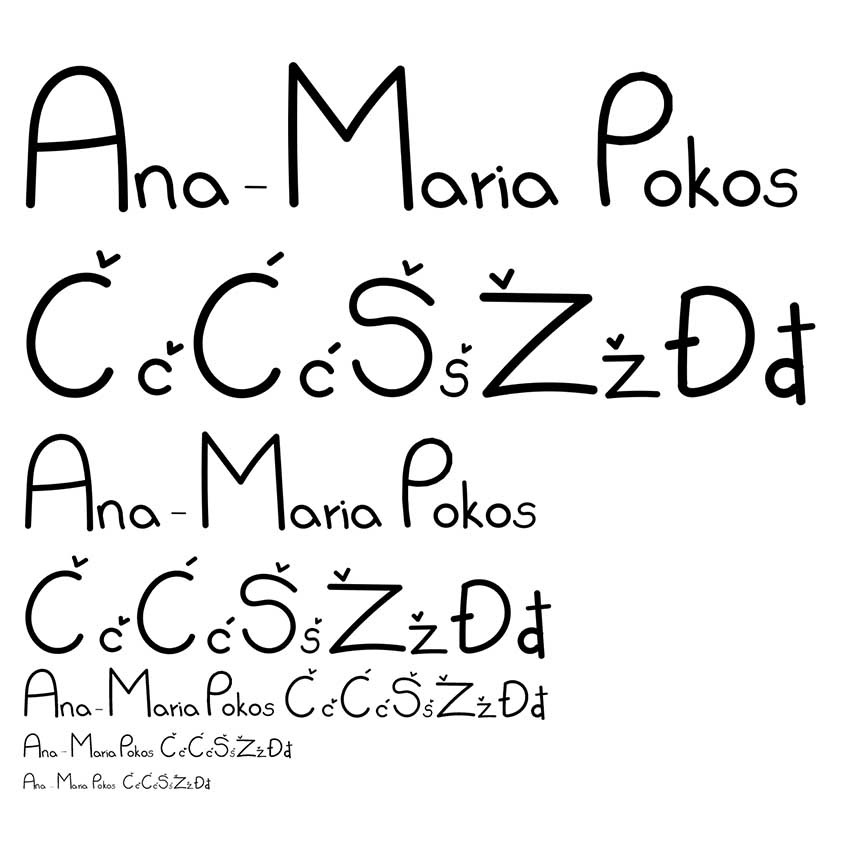
Vježba 2
Crtanje Bezierovih krivulja u koordinatnom sustavu.
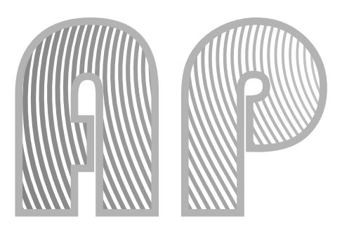
Vježba 3
Adobe Illustrator: sustavi boja, transformacije, multipliciranje, grupiranje.
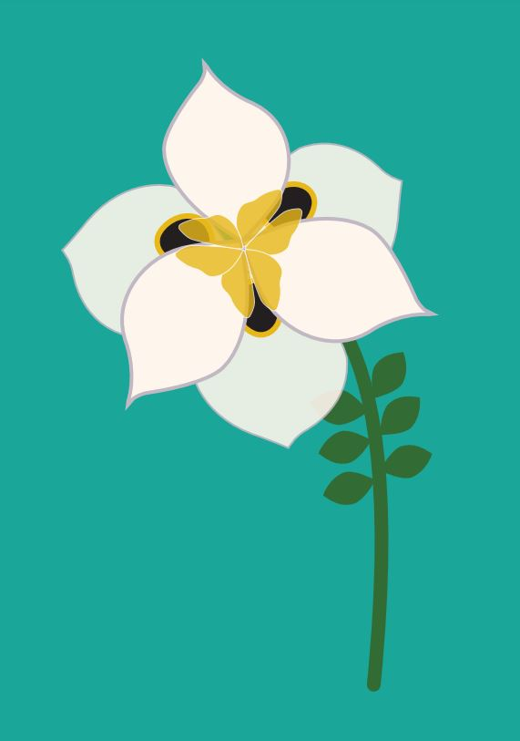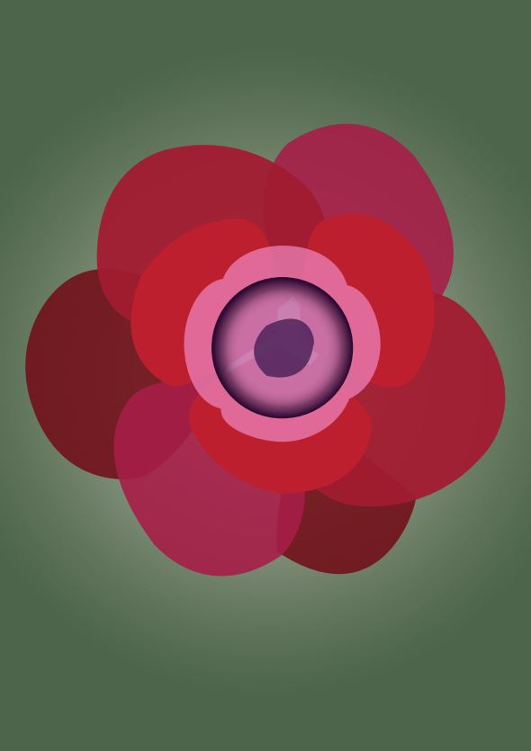
Vježba 4
Kreiranje grafike iz uputa te vlastitog složenog objekta uz korištenje tehnike spajanja i izrezivanja objekata te raznih vrsta gradijenata.
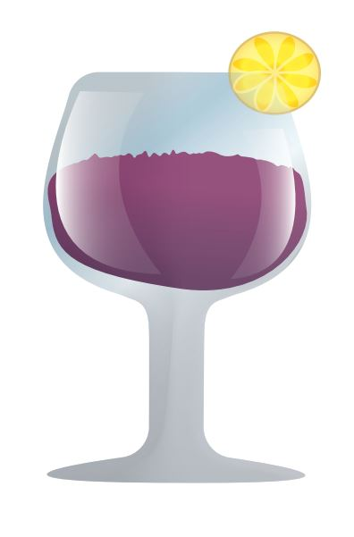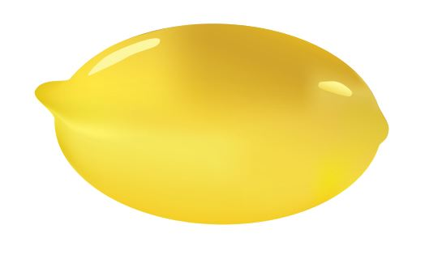
Projektni zadatak 1
Vektorska grafika
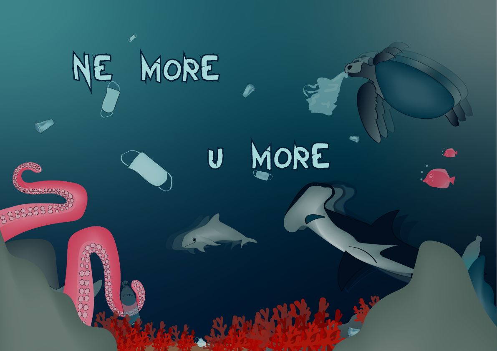
Vježba 5
Adobe Photoshop: tehnike retuširanja fotografija.
 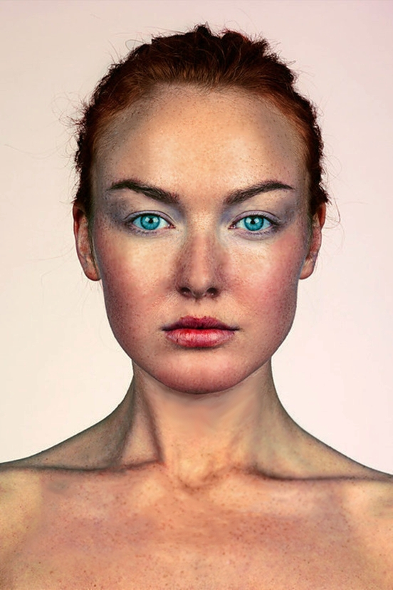
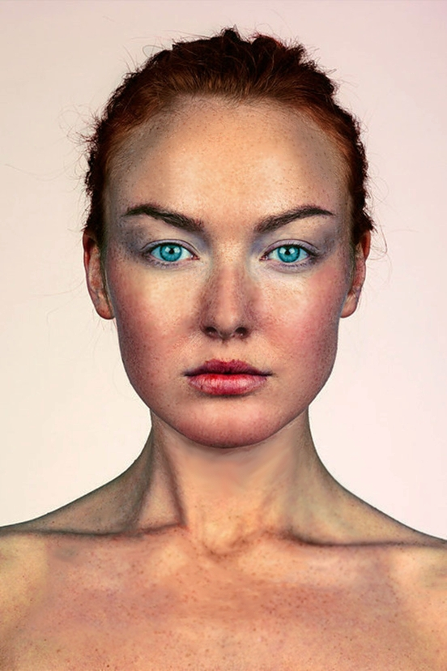
Vježba 6
Korištenje tehnike neinvazivnog koloriranja slike koje se može primijeniti na crno-bijele slike ili slike u boji kojima želimo promijeniti nijansu određenih područja.
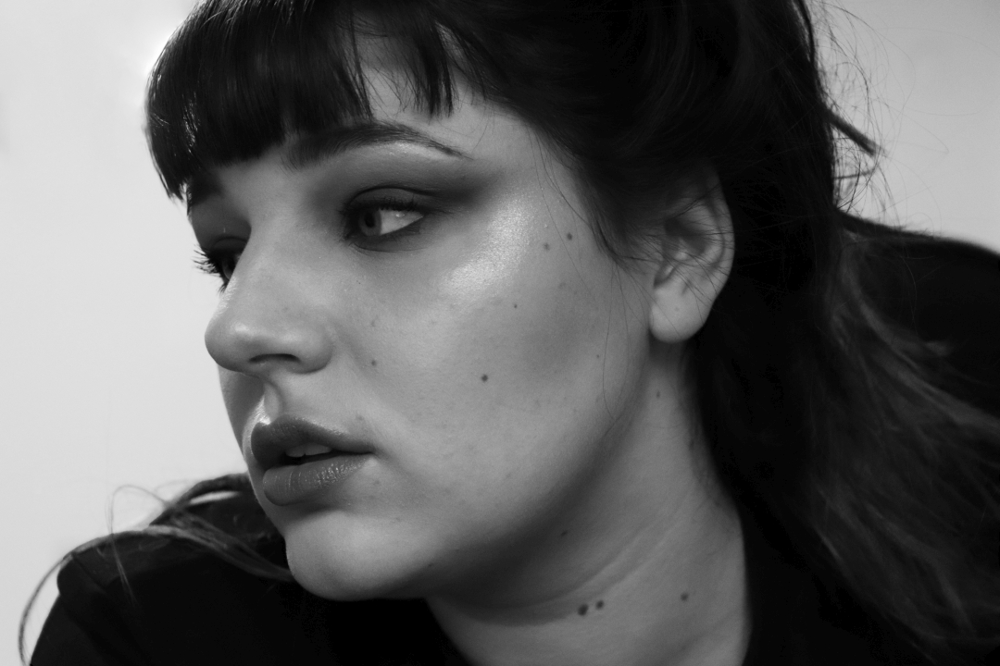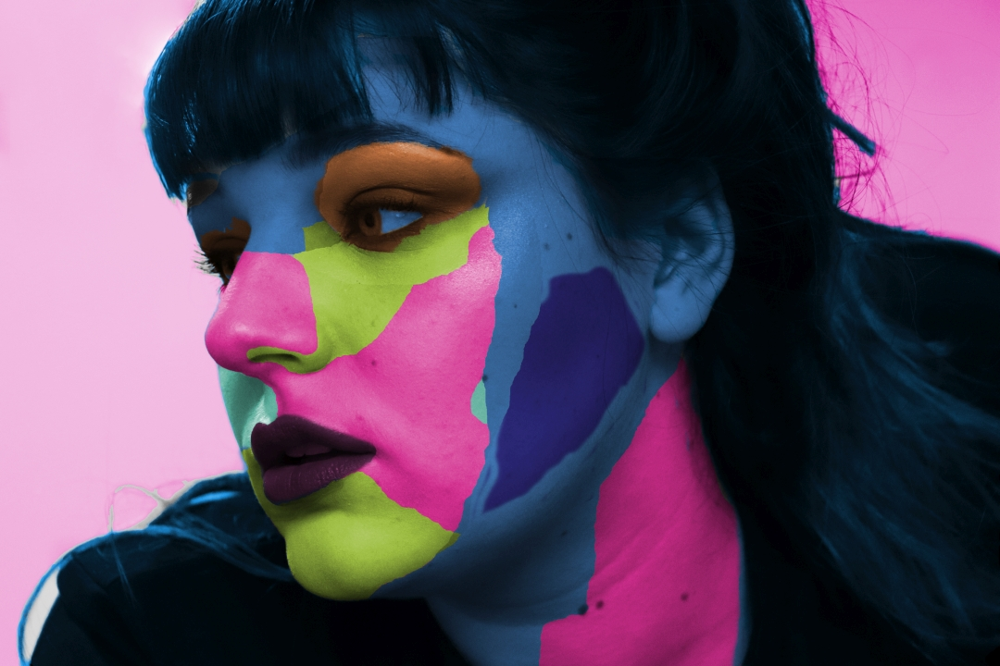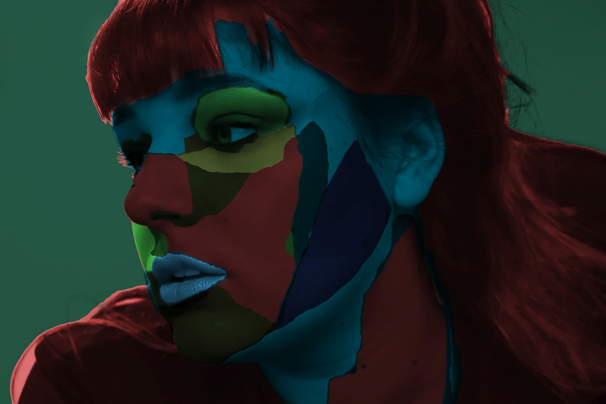
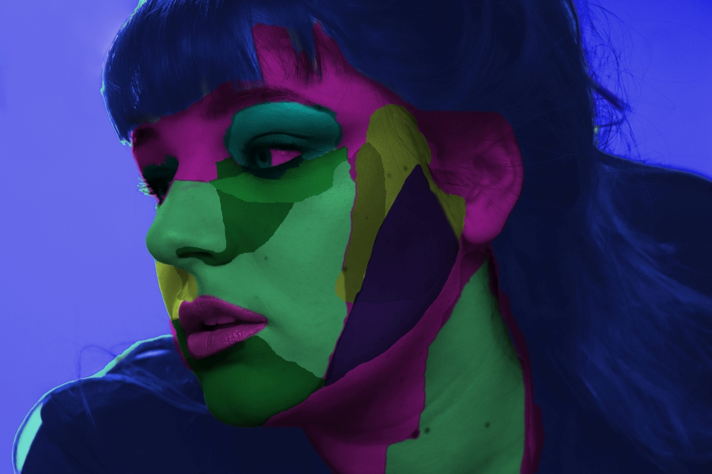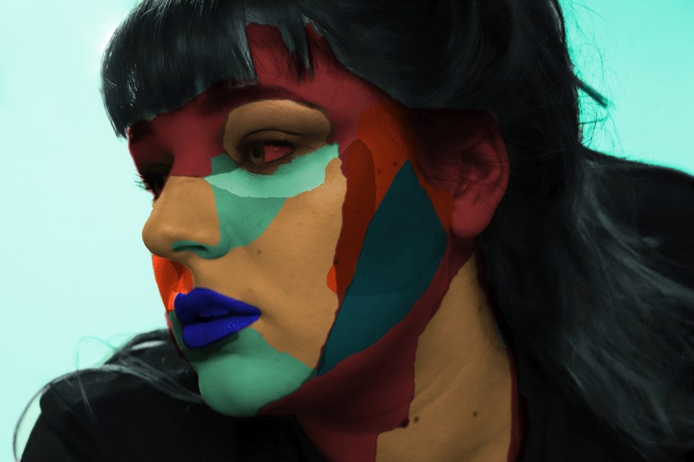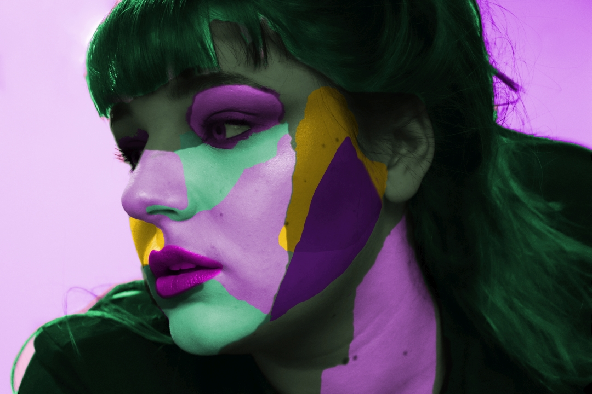
Vježba 7
Adobe Photoshop: fotomontaža, selekcije, maske, korekcija boja.
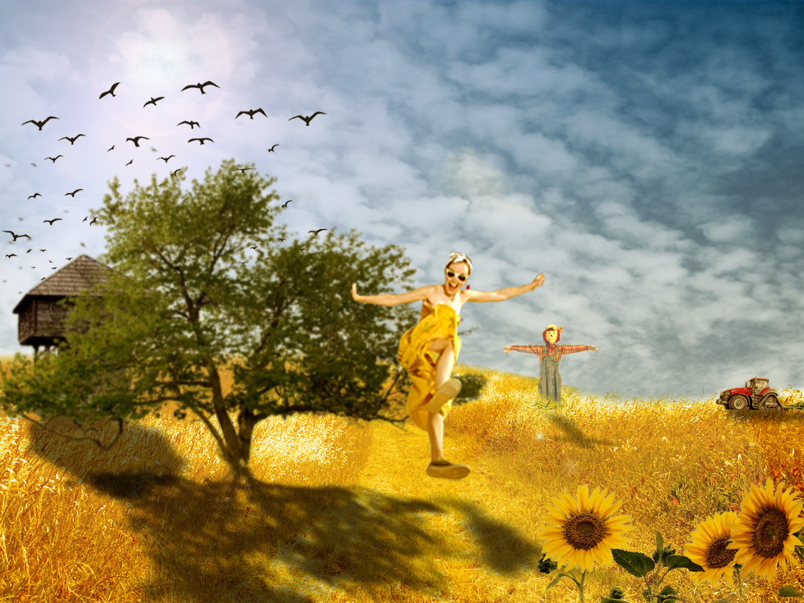
Projektni zadatak 2
Piksel grafika

Vježba 8
Obrada videa - kinemagraf.

Vježba 9
Obrada videa, zvuka, efekti.